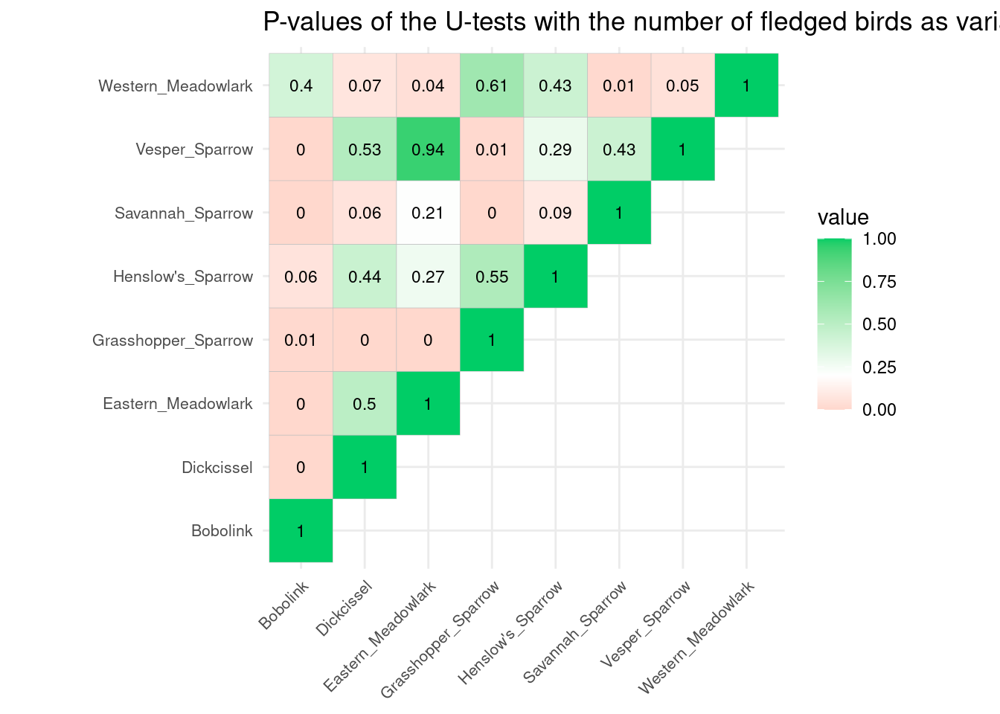
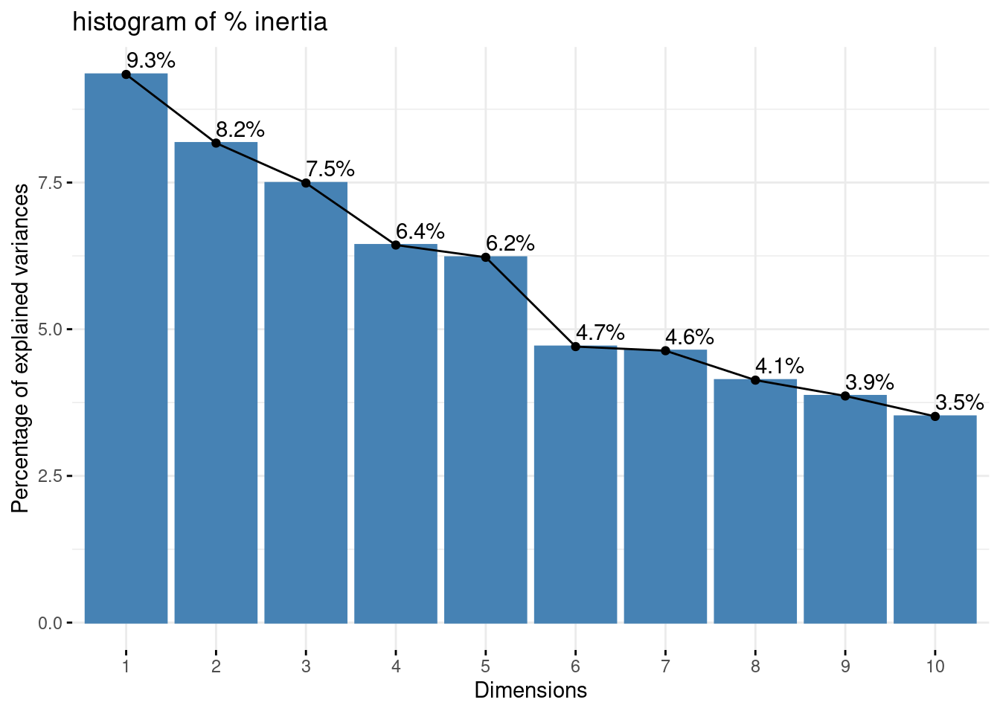
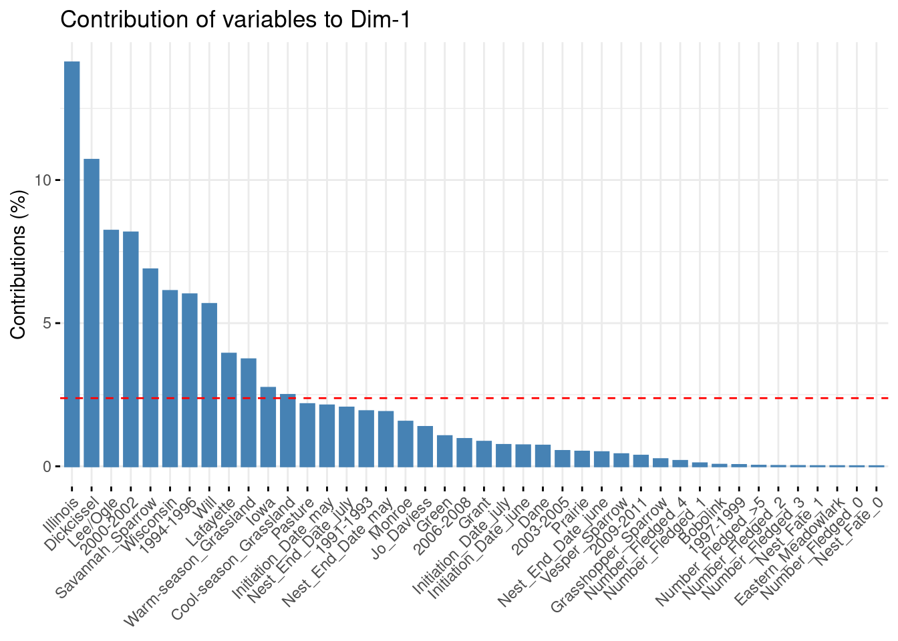
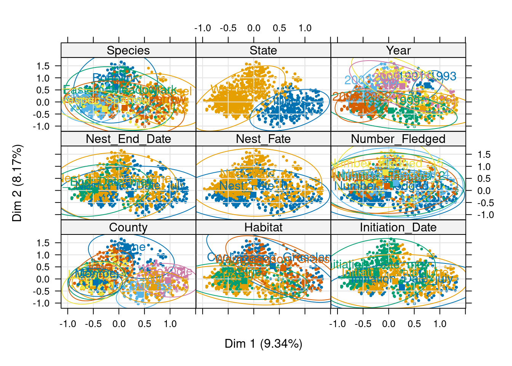
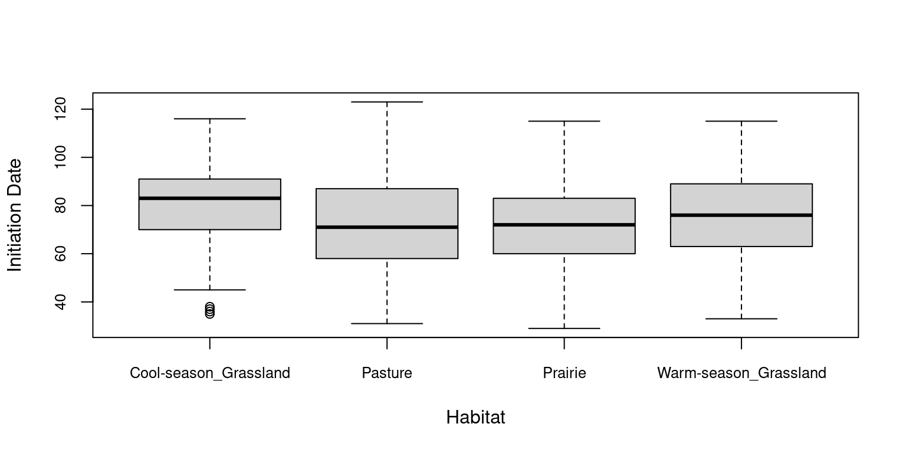
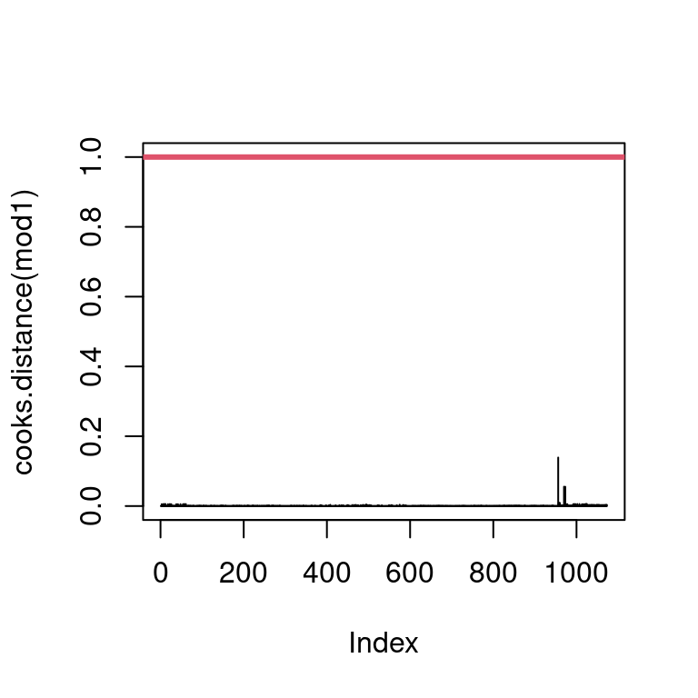
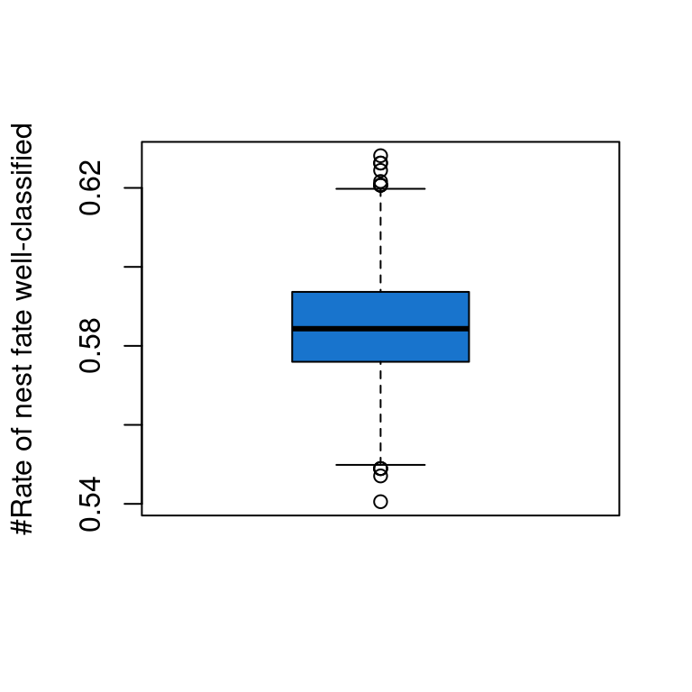
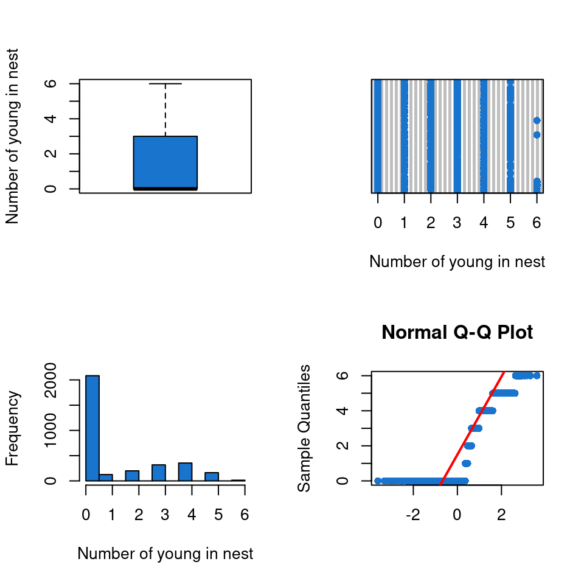
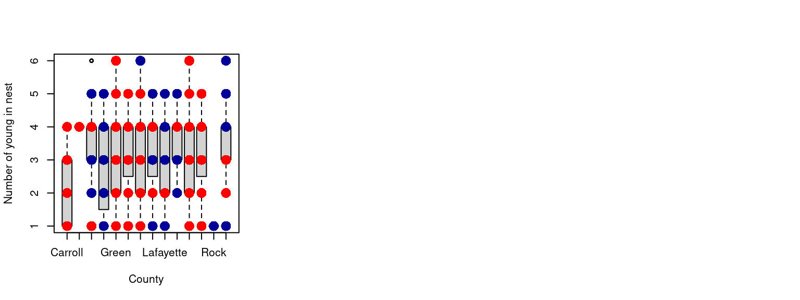

Analysis of the Factors Favorable to Nest Success of Different Bird Species in Two USA States, Wisconsin and Illinois
Author
Rudy, Tanguy, Manon, Garan, Anaëlle, Oceane, Victor
Do not forget to set your working directory in the right placeMenu : Session/Set Working Directory/Choose directoryAnd indicate Git/2024_MODE_OCR
Data presentation
The dataset (available following this link https://zenodo.org/records/8251495 ) used for this work contains nest records from different studies conducted in North America and more specifically in Wisconsin and Illinois. It was conducted in 13 different counties : Dane, Grant, Green, Iowa, Lafayette, Monroe, Rock, Lee, Ogle, Will, Grundy, Carroll, and Jo Daviess counties. The dataset contains the records of 3257 nests and for each of them different observations.
These observations are the following:
State: Illinois or Wisconsin - qualitative explanatory variable
County: Dane (Wisconsin), Grant (Wisconsin), Green (Wisconsin), Iowa (Wisconsin), Lafayette (Wisconsin), Monroe (Wisconsin), Rock (Wisconsin), Lee (Illinois), Ogle (Illinois), Will (Illinois), Grundy (Illinois), Carroll (Illinois), and Jo Daviess (Illinois) - qualitative explanatory variable
Species: Species of birds - Bobolink, Dickcissel, Eastern Meadowlark, Grasshopper Sparrow, Henslow’s Sparrow, Savannah Sparrow, Vesper Sparrow, and Western Meadowlark - qualitative explanatory variable
Years: from 1991 to 2011 - qualitative explanatory variable
Nest Fate: the fate of the chicks -> Successly fledged at least one young (1) or Failed (0)- quantitative explanatory variable
Initiation Date: Date of the first laided egg - quantitative explanatory variable
Number fledged: Number of chicks that survived and fledged the nest - quantitative explanatory variable
Nest End Date: the date when the fate of it was recorded - quantitative explanatory variable
All theses observations are presented in a table with the following collums :
Nest_ID = unique nest identifier
State = State in which nest was located (Illinois or Wisconsin)
County = County in the state in which nest was located
Habitat = Grassy habitat in which nest was located (pasture, cool-season grassland, warm-season grassland, or prairie)
Species = English common name
Year = Year nest was found
Nest_Fate = Successly fledged at least one young (1) or Failed (0).
Initiation_Date = Coded date when the first egg was laid. April 1 = 1; May 1 = 31; June 1 = 62; July 1 = 92; August 1 = 123; September 1 = 154
Number_Fledged = For a successful nest, number of young in nest on nest end date; For a failed nest, Number_Fledged is 0
Nest_End_Date = Coded date when the nest failed or was successful. April 1 = 1; May 1 = 31; June 1 = 62; July 1 = 92; August 1 = 123; September 1 = 154
What kind of questions can we rise ?
Import dataset
Charge the packages Download the spDataLarge package, unavailable on CRAN
if (!require(spDataLarge)) {stop("The package 'spDataLarge' must be installed from the following depot : https://nowosad.github.io/drat/ \n Use the following command in order to install : \n install.packages('spDataLarge', repos = 'https://nowosad.github.io/drat/', type = 'source')")}
Loading required package: spDataLarge
The rest of the packages
First look at the data :
You can visualize the first rows of the dataset by running the following cell :
# View the firsts lines of the datasethead(data)
Nest_ID State County Habitat Species Year Nest_Fate Initiation_Date
1 745JAAP Illinois Will Pasture Bobolink 1995 0 58
2 748JAAP Illinois Will Pasture Bobolink 1995 0 52
3 753JAAP Illinois Will Pasture Bobolink 1995 1 51
4 754JAAP Illinois Will Pasture Bobolink 1995 0 60
5 755JAAP Illinois Will Pasture Bobolink 1995 0 53
6 758JAAP Illinois Will Pasture Bobolink 1995 0 65
Number_Fledged Nest_End_Date
1 0 78
2 0 74
3 6 75
4 0 75
5 0 69
6 0 78
In order to picture the data in a more visual way, we will represent our dataset on a map. The first step in our map creation is the separation of the dataset by the counties.
Now, for each county dataset, we subdivide the said dataset for each year when at least one nest has been observed in this county.
county_names <-c("data_will", "data_jo_daviess", "data_lafayette", "data_iowa", "data_dane", "data_green", "data_grant", "data_grundy", "data_lee_ogle", "data_lee", "data_rock", "data_monroe", "data_carroll", "data_carroll_whiteside")county_dataframes <-mget(county_names)tables <-c()for(i inseq_along(county_dataframes)) { county <- county_dataframes[[i]] county_name <- county_names[i]if (!is.data.frame(county)) {print(paste0("Error: ", county_name, " is not a dataframe"))next }if (!"Year"%in%colnames(county)) {print(paste0("Error: ", county_name, " does not contain a 'Year' column"))next } data_county_year <-split(county, county$Year)for(year inmin(county$Year):max(county$Year)){ tableau <- data_county_year[[as.character(year)]]if (!is.null(tableau)) { variable_name <-paste0(county_name, "_", year) tables <-c(tables, variable_name)assign(variable_name, tableau, envir = .GlobalEnv) } }}
We went from a full dataset with everything mixed-up to multiple datasets for each year and each county when an observation is available.
Here are, for example, the first rows of the dataframe related to the county of Will in 1995
head(data_will_1995)
Nest_ID State County Habitat Species Year Nest_Fate Initiation_Date
1 745JAAP Illinois Will Pasture Bobolink 1995 0 58
2 748JAAP Illinois Will Pasture Bobolink 1995 0 52
3 753JAAP Illinois Will Pasture Bobolink 1995 1 51
4 754JAAP Illinois Will Pasture Bobolink 1995 0 60
5 755JAAP Illinois Will Pasture Bobolink 1995 0 53
6 758JAAP Illinois Will Pasture Bobolink 1995 0 65
Number_Fledged Nest_End_Date longitude_column latitude_column
1 0 78 -88.0817 41.525
2 0 74 -88.0817 41.525
3 6 75 -88.0817 41.525
4 0 75 -88.0817 41.525
5 0 69 -88.0817 41.525
6 0 78 -88.0817 41.525
The main information that we want to present on the map are the mean number of fledged birds by nest and the amount of data available for each county and each year.
Here is the creation of a summary dataframe that contains all these informations for each dataframe.
annee <-c()taux_de_reussite <-c()nb_donnees <-c()lat <-c()lon<-c()# Creation of a summary for each yearfor(table_name in tables){ tablecreated <-get(table_name) annee <-c(annee, tablecreated$Year[1]) taux_de_reussite <-c(taux_de_reussite, sum(tablecreated$Number_Fledged)/nrow(tablecreated)) nb_donnees <-c(nb_donnees, nrow(tablecreated)) lat <-c(lat, tablecreated$latitude_column[1]) lon <-c(lon, tablecreated$longitude_column[1])}# Creating a dataframe of thoose summariestableau <-data.frame(annee = annee, Mean_number_fledged_by_nest = taux_de_reussite, nb_donnees = nb_donnees, lat = lat, lon = lon)# Seting the dataframe as a spatial class in order to create a maptableau_sf <-st_as_sf(tableau, coords =c("lon", "lat"), crs =4326)tableau_sf <-st_transform(tableau_sf, crs =st_crs(us_states))
As we now have all the data of interest in one single organized table, we can actually create the map.
tmap_mode("view")
tmap mode set to interactive viewing
bird_anim <-tm_shape(us_states) +tm_polygons() +tm_shape(tableau_sf) +tm_symbols(size ="Mean_number_fledged_by_nest", col ="nb_donnees", style ="quantile", title.size ="Mean number fledged by nest", title.col ="Number of nest observed") +tm_layout(title ="Bird Observations Over Time", legend.position =c("left", "bottom"),frame =FALSE, legend.show = T) +tm_facets(by ="annee", nrow =1, ncol =1, free.coords =FALSE)
And now, we just have to run the following cell to display the map.
tmap_animation(bird_anim)
Creating frames
========
===
====
====
====
====
===
====
====
====
====
====
===
====
====
====
====
===
====
====
Creating animation
Please, check out the newly created map on the “Viewer” panel of your Rstudio application.
I believe that the first thing we can say about the data, is that it is unevenly distributed. Depending on the year and the county, the number of observed nests changes ; and sometimes not even a single observation is available.
1. Data exploration
Repartition of the data through time
Statistical tests
In this part, several statistical tests are performed in order to answer questions.
First question : Does the number of fledged birds depend on the species ?
H0 : there is no differences between species
First, we observe the data with a boxplot. There is no significant differences through the boxplots.
ggplot(data = data, aes(x = Habitat, y = Nest_End_Date) ) +geom_boxplot(aes(fill = Habitat)) +ggtitle("Nest_End_Date depending on the Habitat")
Then, we test the normality of the data. All the p-values are ranged in a dataframe.
data |># Selection of only two columns of interest dplyr::select( Species, Number_Fledged ) |># Calculation of the p-value of the shapiro test for each species dplyr::group_by(Species) |> dplyr::summarise(shap =shapiro.test(Number_Fledged)$p )
Conclusion : each subset does not follow the normality. We can perform a U test (non parametric test) :
# Construction of an empty 8x8 dataframe. It will contains each p-value of the U testcor_df <-as.data.frame(matrix(nrow =8, ncol =8, NA) )# Retrive the species namesspecies <-as.character(unique(data$Species))# Rename the matrixcolnames(cor_df) <- speciesrownames(cor_df) <- speciesdata_species <- data |> dplyr::select( Species, Number_Fledged ) |> dplyr::arrange(Species)for (sp1 in (1:(length(species)))){for (sp2 in (1:length(species))){## Retrieve the data of the species 1 species_1 <- data_species |> dplyr::filter(Species == species[sp1]) |> dplyr::select(Number_Fledged)## Retrieve the data of the species 2 species_2 <- data_species |> dplyr::filter(Species == species[sp2]) |> dplyr::select(Number_Fledged)## Formating of the vector containing the number of fledged birds. species_1 <-as.vector(species_1)$Number_Fledged species_2 <-as.vector(species_2)$Number_Fledged## To put the p.values on the correlation matrix cor_df[sp1,sp2] <-wilcox.test(species_1, species_2)$p.value }}
Now, we can observe the p-values in the following matrix :
ggcorrplot(corr = cor_df,lab =TRUE,lab_size =3,show.diag =TRUE,type ="upper" ) +theme(axis.text.x =element_text(size =8,angle =45),axis.text.y =element_text(size =8) ) +scale_fill_gradient2(low ="tomato2", high ="springgreen3", midpoint =0.2) +ggtitle("P-values of the U-tests with the number of fledged birds as variable")
Scale for fill is already present.
Adding another scale for fill, which will replace the existing scale.

Observation : we see that there is globally no differences in the mean of the groups. So we keep H0.
Second question : we want to summarise the information depending on different factor.
In the following chunks, a list named data_summariser is created and it will contains several dataframes. These dataframes summarise the different quantitative variables (i.e. Nest_Fate, Initiation_Date, Number_Fledged and Nest_End_Date) by the means and for each factor (i.e. County, State, Species and Habitat). There is one dataframe per factor. The goal is to better visualise the repartition of the species as a function of a factor AND to see the means.
Here, we summarise with the factor : Species.
## Calculation of the mean of each variables depending on the Speciesdata_sp <- data |> dplyr::select( Species,Nest_Fate,Initiation_Date, Number_Fledged, Nest_End_Date )|> dplyr::group_by( Species ) |> dplyr::summarise(count =n(),prop_Nest_Fate =sum(Nest_Fate) /length(Nest_Fate),mean_Init_Date =mean(Initiation_Date),mean_Number_Fledged =mean(Number_Fledged),mean_Nest_End_Date =mean(Nest_End_Date), )## Calculation of the mean of each variables depending on the habitatdata_hab <- data |> dplyr::select( Habitat,Nest_Fate,Initiation_Date, Number_Fledged, Nest_End_Date )|> dplyr::group_by( Habitat ) |> dplyr::summarise(count =n(),prop_Nest_Fate =sum(Nest_Fate) /length(Nest_Fate),mean_Init_Date =mean(Initiation_Date),mean_Number_Fledged =mean(Number_Fledged),mean_Nest_End_Date =mean(Nest_End_Date), )## Calculation of the mean of each variables depending on the statedata_state <- data |> dplyr::select( State,Nest_Fate,Initiation_Date, Number_Fledged, Nest_End_Date )|> dplyr::group_by( State ) |> dplyr::summarise(count =n(),prop_Nest_Fate =sum(Nest_Fate) /length(Nest_Fate),mean_Init_Date =mean(Initiation_Date),mean_Number_Fledged =mean(Number_Fledged),mean_Nest_End_Date =mean(Nest_End_Date), )## Calculation of the mean of each variables depending on the countydata_county <- data |> dplyr::select( State, County, Nest_Fate,Initiation_Date, Number_Fledged, Nest_End_Date )|> dplyr::group_by( State, County ) |> dplyr::summarise(count =n(),prop_Nest_Fate =sum(Nest_Fate) /length(Nest_Fate),mean_Init_Date =mean(Initiation_Date),mean_Number_Fledged =mean(Number_Fledged),mean_Nest_End_Date =mean(Nest_End_Date), )
`summarise()` has grouped output by 'State'. You can override using the
`.groups` argument.
We create a list called data_summariser that will contains each previously created tables.
data_summariser <-list() # Creation of the due list data_summariserdata_summariser$Species <- data_sp # Add the Species tabledata_summariser$Habitat <- data_hab data_summariser$State <- data_statedata_summariser$County <- data_countydata_summariser
### Creation of a function to replace the number by a month num_to_month <-function(num){if (num %in% (1:30)){ res <-"april" } elseif (num %in% (31:61)){ res <-"may" } elseif (num %in% (62:91)){ res <-"june" } elseif (num %in% (92:122)){ res <-"july" } elseif (num %in% (123:153)){ res <-"august" } else { res <-"september" }return (res)}
Now, we trasform all the quantitative variable into factors.
## Conversion into months data_ACM <- datadata_ACM$Initiation_Date <-lapply(X = data_ACM$Initiation_Date, FUN = num_to_month )data_ACM$Nest_End_Date <-lapply(X = data_ACM$Nest_End_Date, FUN = num_to_month )## Conversion into factorsdata_ACM <- data_ACM |> dplyr::mutate(Nest_Fate =as.factor(Nest_Fate),Initiation_Date =as.factor(unlist(Initiation_Date)),Number_Fledged =as.factor(Number_Fledged),Nest_End_Date =as.factor(unlist(Nest_End_Date)),Year =as.factor(Year) )
MCA analysis (data exploring)
Before doing the MCA analysis, we must verify that all the modalities represent at least 3% of the data
# Proportions de chaques modalités dans chaques variables:prop.table(table(data_ACM$State))*100
Illinois Wisconsin
32.94443 67.05557
prop.table(table(data_ACM$County))*100
Carroll Carroll/Whiteside Dane Grant
0.4605465 0.1535155 13.5400675 3.1010132
Green Grundy Iowa Jo_Daviess
5.5572613 1.6272644 22.8431072 8.9653055
Lafayette Lee Lee/Ogle Monroe
14.7681916 0.6140620 9.1188210 7.1538225
Rock Will
0.0921093 12.0049125
april august july june may
1.4737488 0.0307031 14.2462389 47.8354314 36.4138778
prop.table(table(data_ACM$Nest_End_Date))*100
april august july june may
0.0307031 2.8860915 39.5455941 47.0371508 10.5004605
Some of the modalities are under-represented. We must delete them. The modalities under-represented are: Countries Carroll, Carroll/Whiteside, Grundy, Lee and Rock, Species Henslow’s Sparrow and Western Meadowlark, half of the years modalities, 6 fledged chicks, and months April and August for both nest initiation date and nest end date.
prop.table(table(data_ACM$County))*100<3
Carroll Carroll/Whiteside Dane Grant
TRUE TRUE FALSE FALSE
Green Grundy Iowa Jo_Daviess
FALSE TRUE FALSE FALSE
Lafayette Lee Lee/Ogle Monroe
FALSE TRUE FALSE FALSE
Rock Will
TRUE FALSE
# We must delete the data of counties Carroll, Carroll/Whiteside, Grundy, Lee and Rockdata_ACM <- data_ACM[-which(data_ACM$County =="Carroll"| data_ACM$County =="Carroll/Whiteside"| data_ACM$County =="Grundy"| data_ACM$County =="Lee"| data_ACM$County =="Rock"),]data_ACM$County <-droplevels(data_ACM$County)
# We must delete the data of species Henslow's_Sparrow and Western_Meadowlarkdata_ACM <- data_ACM[-which(data_ACM$Species =="Henslow's_Sparrow"| data_ACM$Species =="Western_Meadowlark"),]data_ACM$Species <-droplevels(data_ACM$Species)
# As half of the modalities are under-represented, we will group the years by 3.data_ACM <- data_ACM %>%mutate(Year =factor(case_when( Year %in%c("1991", "1992", "1993") ~"1991-1993", Year %in%c("1994", "1995", "1996") ~"1994-1996", Year %in%c("1997", "1998", "1999") ~"1997-1999", Year %in%c("2000", "2001", "2002") ~"2000-2002", Year %in%c("2003", "2004", "2005") ~"2003-2005", Year %in%c("2006", "2007", "2008") ~"2006-2008", Year %in%c("2009", "2010", "2011") ~"2009-2011" ), levels =c("1991-1993", "1994-1996", "1997-1999", "2000-2002", "2003-2005", "2006-2008", "2009-2011")))prop.table(table(data_ACM$Year))*100<3
# We will group the nest with 5 or 6 fledged chicks with a modality labelled ">5"levels(data_ACM$Number_Fledged) <-c(levels(data_ACM$Number_Fledged), ">5")data_ACM[which(data_ACM$Number_Fledged ==5| data_ACM$Number_Fledged ==6),]$Number_Fledged <-as.factor(">5")data_ACM$Number_Fledged <-droplevels(data_ACM$Number_Fledged)
prop.table(table(data_ACM$Initiation_Date))*100<3
april august july june may
TRUE TRUE FALSE FALSE FALSE
# We must delete the data with an initiation date in August and April.data_ACM <- data_ACM[-which(data_ACM$Initiation_Date =="august"| data_ACM$Initiation_Date =="april"),]data_ACM$Initiation_Date <-droplevels(data_ACM$Initiation_Date)
prop.table(table(data_ACM$Nest_End_Date))*100<3
april august july june may
TRUE TRUE FALSE FALSE FALSE
# We must delete the data with an end date in August and April.data_ACM <- data_ACM[-which(data_ACM$Nest_End_Date =="august"| data_ACM$Nest_End_Date =="april"),]data_ACM$Nest_End_Date <-droplevels(data_ACM$Nest_End_Date)
Now, we can check again that no modalities are under-represented (threshold 3%).
# Proportions de chaques modalités dans chaques variables:prop.table(table(data_ACM$State))*100
Illinois Wisconsin
30.26634 69.73366
prop.table(table(data_ACM$County))*100
Dane Grant Green Iowa Jo_Daviess Lafayette Lee/Ogle
12.832930 3.424421 5.984089 23.555863 7.990315 15.980630 9.477689
Monroe Will
7.955725 12.798340
All the modalities are enough represented. We can now start the MCA analysis.
# MCA without the Nest IDs.ACM_bird <-MCA(data_ACM[,-1])
fviz_eig(ACM_bird, main="histogram of % inertia", addlabels = T)

The inertia holded by the first axis is very low (9.3%)
Let’s see wich modalities are significantly contributing to the analysis, for the axis 1 and 2
fviz_contrib(ACM_bird, choice='var', axes=1)

fviz_contrib(ACM_bird, choice='var', axes=2)
Let’s print only the modalities above the thresold of 1/n, n is the number of modalities, and the modalities above this thresold are significantly contributing to the MCA.
# We set the thresold for significant modalitiesthreshold <- (1/nrow(ACM_bird$var$contrib))*100# We extract significant contributions for dim 1var_contrib <-get_mca_var(ACM_bird)$contribsignificant_vars_dim1 <-rownames(var_contrib)[var_contrib[, 1] > threshold]length(significant_vars_dim1)
[1] 12
# We extract significant contributions for dim 2significant_vars_dim2 <-rownames(var_contrib)[var_contrib[, 2] > threshold]length(significant_vars_dim2)
# There is 24 significant modalities on dimension 1 and 2. Let's print them on the graphfviz_mca_var(ACM_bird, col.var='blue', repel = T, alpha.var ="contrib")
# Representation of the individuals between axis 1 and 2, coloring for each variableplotellipses(ACM_bird, means = F)

We can see that the nests are clearly separated by the state they come from. We can see a light shift on axis 2 with the nest fate values. The other variables are forming less distinct groups.
On axis 1, the most contributing variable is the state Illinois. It is associated with the specie Dickcissel, with the county Will and Lee/Ogle, years 1994-1996, and the warm season on Grassland. On the other side of the axis, the specie Savannah Sparrow is higly associated with years 2000-2002, and also with the county Lafayette and Iowa and the state Wisconsin.
On axis 2, the most contributing variable is the county Dane, and associated with years 2006-2008 and cool season Grassland. It is also associated with the specie Bobolink, the nest fate equal 1, and the number fledged superior or equal to 5. To say otherwise, the nesting birds have a better success in the county Dane, especially between 2006 and 2008 and during the cool season in grasslands. The specie Bobolink is also highly successive in nesting a lot of chicks. On the other side of the axis, the variable significantly contributing are years 1997-1999, state Illinois, nest end in July, habitat pasture and county Jo Daviess, with nest fate 0 and number fledged 0. Therefore, it is most likely that these conditions are decreasing the probabilities of success in nesting chicks.
II. Analysing the relationship between nest fate and county, habitat, species, year, initiation date using a generalized linear model (GLM) with a binomial distribution
A. Data Exploration
In this part we choose to explain the nest fate with different variables. We chose to focus on the state of Illinois because adding the state might lead to bad modelling as there might be not enough data for each of them.
Aim of the study : We want to model the fate of the nest as a response of the County, the Habitat, the Species, the Year, the Initiation date. We are looking for a model that could explain the distribution of Nest fate.
Method : Here our response variable is either a sucess or a failure. This response follows a binomial distribution with the probability density function \[P(X = k) = \binom{n}{k} p^k (1-p)^{n-k}\]
The term \[ \binom{n}{k} \] is the binomial coefficient, which represents the number of ways to choose ( k ) successes from ( n ) trials.
\[ p \] is the probability of success on a single trial.
\[1 - p\] is the probability of failure on a single trial.
Every statistical analysis starts with the exploration of the dataset.
Outlier in \(Y\)
Here we are checking the values of Y (the values of Nest Fate)
Show the code
# Number of 0 and 1 in Ytable(data_Illinois$Nest_Fate)
0 1
736 337
According to the results table, it appears that overall, there are roughly twice as many failures as successes.
For quantitative Xs : outlier and distribution of \(X\) values
Here we have one quantitative explanatory variable \(X\). We check its distribution and if there is any outlier value.
The results tables provided by our script show different things. First of all for the County variable we can observe that some counties have very little records. For example Carrol/Whiteside has 5 records of nest while counties like Jo Daviess have 292 records. This could lead to mis-modelling so attention on the model results is necessary. For Habitat variable it seems that one habitat in particular (Pasture) has more records than the other. For the Species variable, similarly to county variable, we observe that some species have more records than others. We observe the same for the Year variable.
Relationships between Y and Xs ?
We can then analyse graphically if we might have relationships between \(Y\) and \(Xs\).
Looking at those graphs it doesn’t seems like the Initiation_date, the County or the Habitat has any effects on the Nest_fate. Maybe a little bit for County but the statistical analysis afterward will enable us to have more information on which variable has an effect. For the Year and the Species we might observe a little difference, but still really light.
Analysing interaction between Xs
In any modelling approach there is a need to check for interactions between variables. In our study we judge that there is none.
Checking collinearity between \(Xs\)
To avoid multicollinearity in modeling, we need to analyze how the explanatory variables \(X_s\) are related. It is important to check for collinearity. Indeed if some variables are correlated they measure the same thing and therefore keeping both of them might lead to bad prediction.
Show the code
# Checking collinearity between qualitative explanatory variable# Contingency table between County and Habitattable(data_Illinois$County, data_Illinois$Habitat)
# Boxplots to check for relationship between Initiation_Date and the qualitative explanatory variables# Initiation_Date and Countyboxplot(data_Illinois$Initiation_Date ~ data_Illinois$County, xlab="County", ylab="Initiation Date", cex.axis=0.8)
Show the code
# Initiation_Date and Habitatboxplot(data_Illinois$Initiation_Date ~ data_Illinois$Habitat, xlab="Habitat", ylab="Initiation Date", cex.axis=0.8)

Show the code
# Initiation_Date and Speciesboxplot(data_Illinois$Initiation_Date ~ data_Illinois$Species, xlab="Species", ylab="Initiation Date", cex.axis=0.4)
Show the code
# Initiation_Date and Yearboxplot(data_Illinois$Initiation_Date ~ data_Illinois$Year, xlab="Year", ylab="Initiation Date", cex.axis=0.8)
Here it seems that there is a strong collinearity between County and Habitat as well as between Species and Year and also between Species and Habitat. Therefore, we are not going to keep County, Habitat and Year as explanatory variables in our model.
B. Statistical Analysis
Model building up
Because our response variable is a binary variable that follows a binomial distribution we have a link function : the logit.
Show the code
# Model formulationmod1<-glm(Nest_Fate~Species+ Initiation_Date ,data=data_Illinois ,family=binomial(link="logit"))# Then we check for significancedrop1(mod1,test="Chi")
The results table shows that Initiation_Date is not significant. However the AIC with Initiation_Date is better which means we should keep this variable despite its lack of significance.
Model coefficient and its equation
Show the code
# Coefficients of the modelsummary(mod1)
Call:
glm(formula = Nest_Fate ~ Species + Initiation_Date, family = binomial(link = "logit"),
data = data_Illinois)
Coefficients:
Estimate Std. Error z value Pr(>|z|)
(Intercept) -1.097853 0.381114 -2.881 0.00397 **
SpeciesDickcissel 0.189410 0.329713 0.574 0.56565
SpeciesEastern_Meadowlark -0.382551 0.335541 -1.140 0.25424
SpeciesGrasshopper_Sparrow 0.664586 0.315297 2.108 0.03505 *
SpeciesHenslow's_Sparrow -0.327407 1.155216 -0.283 0.77686
SpeciesSavannah_Sparrow -0.655641 0.822713 -0.797 0.42549
SpeciesVesper_Sparrow 0.180147 0.420980 0.428 0.66871
SpeciesWestern_Meadowlark 0.961508 0.416342 2.309 0.02092 *
Initiation_Date 0.000686 0.004052 0.169 0.86557
---
Signif. codes: 0 '***' 0.001 '**' 0.01 '*' 0.05 '.' 0.1 ' ' 1
(Dispersion parameter for binomial family taken to be 1)
Null deviance: 1335.5 on 1072 degrees of freedom
Residual deviance: 1296.3 on 1064 degrees of freedom
AIC: 1314.3
Number of Fisher Scoring iterations: 4
The following equation is the one of the model : \[\log\left(\frac{p}{1-p}\right) = -1.097853 + 0.189410 \cdot \text{Species}_{\text{Dickcissel}} - 0.382551 \cdot \text{Species}_{\text{Eastern Meadowlark}} + 0.664586 \cdot \text{Species}_{\text{Grasshopper Sparrow}} - 0.327407 \cdot \text{Species}_{\text{Henslow's Sparrow}} - 0.655641 \cdot \text{Species}_{\text{Savannah Sparrow}} + 0.180147 \cdot \text{Species}_{\text{Vesper Sparrow}} + 0.961508 \cdot \text{Species}_{\text{Western Meadowlark}} + 0.000686 \cdot \text{Initiation\_Date}\]
where \(p\) is the probability that the event is true.
Intercept (-1.097853): The value of the log-odds when all explanatory variables are zero.
Species Dickcissel (0.189410): A positive coefficient, but not significant ((p = 0.56565)), indicating that the effect of this species on the chances of nest success is not statistically significant.
Species Eastern Meadowlark (-0.382551): A negative coefficient, not significant ((p = 0.25424)).
Species Grasshopper Sparrow (0.664586): A positive and significant coefficient ((p = 0.03505)), suggesting that this species increases the chances of nest success.
Species Henslow’s Sparrow (-0.327407): A negative coefficient, not significant ((p = 0.77686)).
Species Savannah Sparrow (-0.655641): A negative coefficient, not significant ((p = 0.42549)).
Species Vesper Sparrow (0.180147): A positive coefficient, not significant ((p = 0.66871)).
Species Western Meadowlark (0.961508): A positive and significant coefficient ((p = 0.02092)).
Initiation Date (0.000686): A positive coefficient, but not significant ((p = 0.86557)), indicating that it does not have a statistically significant effect on nest success.
Explanation provided by the model
One way to evaluate the goodness of fit for our models is to assess the difference between our model and the null model (which summarizes the data with a single parameter: the mean of𝑌) Y). This null model essentially explains nothing. To do so we calculate a parameter, \[{pseudo}-R^2\] by examining the distance between the deviance of the null model and the residual deviance of our model.
Show the code
# Estimate of deviance explained(mod1$null.deviance-mod1$deviance)/mod1$null.deviance
[1] 0.0293313
Show the code
# Some others estimates of deviance explained - package 'rcompanion'nagelkerke(mod1)
$Models
Model: "glm, Nest_Fate ~ Species + Initiation_Date, binomial(link = \"logit\"), data_Illinois"
Null: "glm, Nest_Fate ~ 1, binomial(link = \"logit\"), data_Illinois"
$Pseudo.R.squared.for.model.vs.null
Pseudo.R.squared
McFadden 0.0293313
Cox and Snell (ML) 0.0358486
Nagelkerke (Cragg and Uhler) 0.0503523
$Likelihood.ratio.test
Df.diff LogLik.diff Chisq p.value
-8 -19.586 39.172 4.5671e-06
$Number.of.observations
Model: 1073
Null: 1073
$Messages
[1] "Note: For models fit with REML, these statistics are based on refitting with ML"
$Warnings
[1] "None"
According to this table, the estimate of the explained deviance is 2.9% which is very low.
C. Model validation
Checking for influential individuals
We make sure that there is no influential individuals.
Show the code
par(mfrow =c(1, 1))plot(cooks.distance(mod1), type ="h", ylim =c(0, 1))abline(h =1, col =2,lwd =3)

The graph does not show any influential individuals.
Prediction with different data
Here we want to assess if our model is able to well-classify nest based on our data.
Show the code
# We could do a simulationN <-nrow(data_Illinois)Pi <-fitted(mod1)data_Illinois$Ysim <-rbinom(N, size =1, Pi)# Classification tableZ <-table(data_Illinois$Nest_Fate, data_Illinois$Ysim) / Nrownames(Z) <-c("Observed 0", "Observed 1")colnames(Z) <-c("Predicted 0", "Predicted 1")Z
# And repeat this 1000 times, store the results and calculate an average classification tablePi <-fitted(mod1)N <-nrow(data_Illinois) NSim <-1000diagZ<-matrix(nrow = N, ncol = NSim)for (i in1:NSim) { Ysim <-rbinom(N, size =1, Pi) Z<-table(data_Illinois$Nest_Fate, Ysim) / N diagZ[,i]<-sum(diag(Z)) }#Average rate of individuals well-classified by the modelboxplot(diagZ[2,], col='dodgerblue3',ylab='#Rate of nest fate well-classified')

Show the code
mean(diagZ[2,])
[1] 0.5848928
Here we have 58% of good predictions, which is somewhat below the common threshold of 70% for a model to be considered good. This suggests that the model may need improvement.
This result is not surprising given our initial data. Because they are from different studies some variables barely contains some species or years, etc… This could explain why our model is not suitable.
III. Analysing the relationship between nest fate and county, habitat, species, year, initiation date using a generalized linear model (GLM) with a Poisson distribution
County : the county in the state where the state has been found. 14 levels factor.
Habitat : the type of habitat in which the nest has been found. 4 levels factor.
Species : the species of the bird that has build the nest. 8 levels factor.
Year : the year of the nest building. 21 levels factor.
Number_Fledged : the number of birds that hatch on the nest when they hatch. Quantitative variable.
We want to study the impact of four qualitative variables, the habitat, the county, the species and the year over the number of young hatched in the nest “Number_Fledged”. It is a counting variable, which imply that it follows a Poisson distribution. A negative binomial distribution could be used but is preferred when the count values are high (which is not really the case here since the highest value is of 6)
A Poisson law is used to describe rare, discrete and independent events. Hence the variable \(Y\) that follows a Poisson distribution of parameter \(\lambda\) is written: \[Pr(Y=y)=\frac{e^{-\lambda}.\lambda^y}{y!}\] where \(y\) represent the value of the count (here \(y\) ∈ [0-6]) and \(\lambda\) is the mean value and variance of the Poisson distribution (because in a Poisson law E(\(y\))= Var(\(y\))=\(\lambda\)).
A. Data exploration
Before any analysis, it is important to have a look at the data.
Outlayer values in the response variable \(Y\) (the number of young in the nest, Number_Fledged) and values distribution:
par(mfrow=c(2,2))# Boxplotboxplot(data$Number_Fledged,col='dodgerblue3',ylab='Number of young in nest')# Cleveland plotdotchart(data$Number_Fledged,pch=16,col='dodgerblue3',xlab='Number of young in nest')# Histogramhist(data$Number_Fledged,col='dodgerblue3',xlab="Number of young in nest",main="")# Quantile-Quantile plotqqnorm(data$Number_Fledged,pch=16,col='dodgerblue3',xlab='')qqline(data$Number_Fledged,col='red',lwd=2)

There aren’t any outlayer values. There are a lot of value at 0. Maybe we can study only the number of young when there are some. It could be a normal distribution.
# Get rid of the lines where the Number of young individuals in the nest is equal to 0data_filtered <-subset(data, Number_Fledged !=0)
par(mfrow=c(2,2))# Boxplotboxplot(data_filtered$Number_Fledged,col='dodgerblue3',ylab='Number of young in nest')# Cleveland plotdotchart(data_filtered$Number_Fledged,pch=16,col='dodgerblue3',xlab='Number of young in nest')# Histogramhist(data_filtered$Number_Fledged,col='dodgerblue3',xlab="Number of young in nest",main="")# Quantile-Quantile plotqqnorm(data_filtered$Number_Fledged,pch=16,col='dodgerblue3',xlab='')qqline(data_filtered$Number_Fledged,col='red',lwd=2)
Now we have a better view of the data.
Outlayer values in the explanatory variable \(Xs\) and values distribution:
# Factor Countysummary(data_filtered$County)
Carroll Carroll/Whiteside Dane Grant
5 1 224 20
Green Grundy Iowa Jo_Daviess
62 11 260 127
Lafayette Lee Lee/Ogle Monroe
165 6 85 103
Rock Will
2 102
Problem: there aren’t the same number of observations in each level of each factors. Suggestion: normalize by the number of observation for each level.
Analyze the relation between Y and Xs
par(mfrow=c(2,2))# Countyboxplot(Number_Fledged~County, varwidth =TRUE, ylab ="Number of young in nest", xlab ="County", col=terrain.colors(14), main ="", data=data_filtered)# Habitatboxplot(Number_Fledged~Habitat, varwidth =TRUE, ylab ="Number of young in nest", xlab ="Habitat", col=terrain.colors(4), main ="",data=data_filtered)# Speciesboxplot(Number_Fledged~Species, varwidth =TRUE, ylab ="Number of young in nest", xlab ="Species", col=terrain.colors(8), main ="",data=data_filtered)# Yearboxplot(Number_Fledged~Year, varwidth =TRUE, ylab ="Number of young in nest", xlab ="Year", col=terrain.colors(21), main ="",data=data_filtered)
It’s not easy to see if the variables have an impact because some of them have a lot of levels, but it is possible to see small differences between them. The analysis will tell us if they really got an impact over the number of young in the nest.
Analyze the interactions between Xs
There are a lot of levels so it’s hard to plot the interactions. We will see if there are some in the analysis.
par(mfrow=c(1,3))# Interactions between County & Habitatplot(Number_Fledged~County,type='n',ylab ="Number of young in nest",xlab="County", data=data_filtered)points(Number_Fledged[Habitat=="Pasture"]~County[Habitat=="Pasture"],pch=16,cex=2,col='#000099', data=data_filtered)points(Number_Fledged[Habitat=="Cool-season Grassland"]~County[Habitat=="Cool-season Grassland"],pch=16,cex=2,col='green', data=data_filtered)points(Number_Fledged[Habitat=="Prairie"]~County[Habitat=="Prairie"],pch=16,cex=2,col='red', data=data_filtered)points(Number_Fledged[Habitat=="Warm-season Grassland"]~County[Habitat=="Warm-season Grassland"],pch=16,cex=2,col='yellow', data=data_filtered)

Here the example between county and habitat doesn’t show a clear pattern. It’s hard to conclude on the interaction aspect.
Checking collinearity between categorical independent variables Xs:
The following code only presents the contingency table between the variables Habitat and Species for convenience, but the same table has to be done with every couple of 4 variables.
Problem : for most of the variables the chi² test can’t be done because of the low number of values in each group. The only one that fulfill the conditions and therefore can be made is between Habitat and Species but the result shows that the variables are correlated.
B. Statistical Analysis
Now that we have a better idea of the data implied in this study, we can begin the statistical analysis.
Building of the model
Because our response variable follows a poisson distribution we use a link function : the log function.
# Model formulationmod1<-glm(Number_Fledged~ County+ Species+ Habitat+ Year ,data=data_filtered ,family=poisson(link="log"))# Variable type : poisson. Link fonction : log# Then we check for significancedrop1(mod1,test="Chi")
Single term deletions
Model:
Number_Fledged ~ County + Species + Habitat + Year
Df Deviance AIC LRT Pr(>Chi)
<none> 541.13 4125.3
County 13 557.02 4115.2 15.8822 0.255551
Species 7 560.94 4131.1 19.8043 0.006008 **
Habitat 3 541.44 4119.6 0.3096 0.958219
Year 20 551.54 4095.7 10.4077 0.960163
---
Signif. codes: 0 '***' 0.001 '**' 0.01 '*' 0.05 '.' 0.1 ' ' 1
We decide to remove the less significative variable : here it’s Year.
# Model formulationmod1<-glm(Number_Fledged~ County+ Species+ Habitat ,data=data_filtered ,family=poisson(link="log"))#type de la variable : poisson et fonction de lien de type log# Then we check for significancedrop1(mod1,test="Chi")
Single term deletions
Model:
Number_Fledged ~ County + Species + Habitat
Df Deviance AIC LRT Pr(>Chi)
<none> 551.54 4095.7
County 13 569.19 4087.3 17.6441 0.17151
Species 7 574.48 4104.6 22.9344 0.00175 **
Habitat 3 551.76 4089.9 0.2194 0.97439
---
Signif. codes: 0 '***' 0.001 '**' 0.01 '*' 0.05 '.' 0.1 ' ' 1
Now the less significative is Habitat
# Model formulationmod1<-glm(Number_Fledged~ County+ Species ,data=data_filtered ,family=poisson(link="log"))#type de la variable : poisson et fonction de lien de type log# Then we check for significancedrop1(mod1,test="Chi")
Single term deletions
Model:
Number_Fledged ~ County + Species
Df Deviance AIC LRT Pr(>Chi)
<none> 551.76 4089.9
County 13 572.82 4085.0 21.056 0.071837 .
Species 7 574.68 4098.8 22.914 0.001764 **
---
Signif. codes: 0 '***' 0.001 '**' 0.01 '*' 0.05 '.' 0.1 ' ' 1
County is still not significative so we have to remove it.
# Model formulationmod1<-glm(Number_Fledged~ Species ,data=data_filtered ,family=poisson(link="log"))#type de la variable : poisson et fonction de lien de type log# Then we check for significancedrop1(mod1,test="Chi")
Single term deletions
Model:
Number_Fledged ~ Species
Df Deviance AIC LRT Pr(>Chi)
<none> 572.82 4085.0
Species 7 599.76 4097.9 26.938 0.000342 ***
---
Signif. codes: 0 '***' 0.001 '**' 0.01 '*' 0.05 '.' 0.1 ' ' 1
summary(mod1)
Call:
glm(formula = Number_Fledged ~ Species, family = poisson(link = "log"),
data = data_filtered)
Coefficients:
Estimate Std. Error z value Pr(>|z|)
(Intercept) 1.29234 0.03863 33.452 < 2e-16 ***
SpeciesDickcissel -0.18558 0.05934 -3.128 0.001762 **
SpeciesEastern_Meadowlark -0.14760 0.05347 -2.761 0.005769 **
SpeciesGrasshopper_Sparrow -0.05604 0.05030 -1.114 0.265207
SpeciesHenslow's_Sparrow -0.18190 0.11514 -1.580 0.114157
SpeciesSavannah_Sparrow -0.19203 0.05648 -3.400 0.000674 ***
SpeciesVesper_Sparrow -0.32409 0.08844 -3.665 0.000248 ***
SpeciesWestern_Meadowlark -0.04452 0.10674 -0.417 0.676633
---
Signif. codes: 0 '***' 0.001 '**' 0.01 '*' 0.05 '.' 0.1 ' ' 1
(Dispersion parameter for poisson family taken to be 1)
Null deviance: 599.76 on 1172 degrees of freedom
Residual deviance: 572.82 on 1165 degrees of freedom
AIC: 4085
Number of Fisher Scoring iterations: 4
According to the model’s summary, the null deviance is of 599.76 and residual deviance is of 572.82. In order to estimate the explained deviance, one can use the following formula:
# Estimate of deviance explained(mod1$null.deviance-mod1$deviance)/mod1$null.deviance
[1] 0.04491502
This is very very bad… The variable species doesn’t seem to explain a lot of the variation in the number of young individuals in the nest.
C. Model validation:
The model that we have done is a generalized linear model so there aren’t residual normality or homogeneity. However, it is important to check the independence of residuals.
First of all, in situations where a counting model is used, such as when following a Poisson distribution, the overdispersion has to be checked. It can be done with the following code. If the result is over 1, there are overdispersion and the model should be reconsidered.
The value is of 0.44 so it’s okay, the residuals aren’t overdispersed.
We can also check for the most influential individuals:
par(mfrow =c(1, 1))plot(cooks.distance(mod1), type ="h", ylim =c(0, 1))abline(h =1, col =2,lwd =3)
There aren’t very influential individuals which can be logical because of the high number of them and the low impact of species over the number of young individuals in the nest.
Conclusions:
The species of the birds has an impact over the number of young individuals in the nest, but it is clearly not the only variable that explain the variation of the response (only 4% are due to the species).
IV. ANOVA
Analysis of variance (ANOVA) is one of the most widely used statistical methods in various disciplines. It allows to model the relationship between a quantitative dependent variable \(Y\) according to the different modalities of one or more qualitative explanatory variables \(Xs\).
We will perform an ANOVA to see the effect of qualitatives variables (state, habitat, species, year) on the quantitative variable Initiation_Date in the Bird_dataset.csv dataset.
We need to check the type of the variables :
Show the code
# Dataset : variables as factorsdata$State<-as.factor(data$State)data$Habitat<-as.factor(data$Habitat)data$Species<-as.factor(data$Species)data$Year<-as.factor(data$Year)str(data)
Nest_ID State County Habitat Species
0 0 0 0 0
Year Nest_Fate Initiation_Date Number_Fledged Nest_End_Date
0 0 0 0 0
There is no missing data here.
Before any modeling, we must explore the data in order to avoid possible errors. Below we present the list of steps to follow before proceeding to the modeling:
1: Check for the presence of outliers in \(Y\) and the distribution of the values of \(Y\)
2: If \(X\) is a quantitative explanatory variable, check for the presence of outliers and the distribution of the values of \(X\)OR/AND If \(X\) is a qualitative explanatory variable, analyze the number of modalities and the number of individuals per modality
3: Analyze the potential relationship between \(Y\) and the \(X_{s}\)
4: Check for the presence of possible interactions between the \(X_{s}\)
Outliers in \(Y\) and distribution of values of \(Y\)
Factor State: The experimental design is not balanced (1071 and 2150 data), but the analysis can be performed because there are enough data in each modality (> 10).
Factor Habitat: The experimental design is not balanced (from 392 to 1683 data), but the analysis can be performed because there are enough data in each modality (> 10).
Factor Species: The experimental design is not balanced. Several species have less than 10 data per modality. It will therefore be necessary to remove these data before continuing the analysis
Factor Year: The experimental design is not balanced (from 24 to 448 data), but the analysis can be performed because there are enough data in each modality (> 10 : threshold from which we consider that carrying out statistical analyses makes sense. You can choose your own threshold).
Removal of poorly represented modalities (< 10 data)
Show the code
# Count the number of occurrences for each modality in data$Speciesspecies_count <-table(data$Species)# Keep only terms with 10 or more occurrencesdata <- data %>%filter(Species %in%names(species_count[species_count >=10]))# Show filtered datahead(data)
Nest_ID State County Habitat Species Year Nest_Fate Initiation_Date
1 745JAAP Illinois Will Pasture Bobolink 1995 0 58
2 748JAAP Illinois Will Pasture Bobolink 1995 0 52
3 753JAAP Illinois Will Pasture Bobolink 1995 1 51
4 754JAAP Illinois Will Pasture Bobolink 1995 0 60
5 755JAAP Illinois Will Pasture Bobolink 1995 0 53
6 758JAAP Illinois Will Pasture Bobolink 1995 0 65
Number_Fledged Nest_End_Date
1 0 78
2 0 74
3 6 75
4 0 75
5 0 69
6 0 78
Analyzing the potential relationship between Y vs Xs
We can graphically analyze the possible relationships between Y and X. This graphical analysis of the relationships between Y and X does not allow us to predict the significance of the relationship. Statistical modeling remains the only available means to identify whether a relationship exists or not.
From the first visualizations, we could make the hypothesis that Year and Species influence Initiation_Date.
Analysis of possible interactions between the four Xs
The interaction between two factors can only be tested if the factors are crossed (all the modalities of one factor are represented in all the modalities of the other factor and vice versa = a complete factorial design). To estimate the presence of interactive effects, we will develop a graphical approach.
We can determine the portion of variance of \(Y\) explained by our model.
Show the code
# R² of the modelsummary(mod2)$adj.r.squared
[1] 0.2201967
We obtain the adjusted R² = 0.22. This means that approximately 22% of the variance of Initiation_Date is explained by our modeling.
Validation of modeling
The assumptions of ANOVA are the same as for any general linear model, namely independence, normality of residuals and homogeneity of variances. In addition, one must check the presence of influential statistical units (i.e. observations having a significant contribution to the construction of the model).
The residuals seem to follow a Normal Distribution.
Homogeneity of variance
The assumption of homogeneity of variance is the fact that the variation of the residuals is approximately equal over the entire range of explanatory variables, should be verified by plotting the residuals at the estimated values and the residuals at the values of the significant variables. The residuals should show no trend.
Show the code
par(mfrow=c(2,2))# residuals vs fittedplot(residuals(mod1)~fitted(mod1) , col='dodgerblue3' , pch=16)# residuals against state factorboxplot(residuals(mod2)~ data$State, varwidth =TRUE,col='darkgrey',ylab ="Residuals",xlab ="States",main ="")# residuals against species factorboxplot(residuals(mod2)~ data$Species, varwidth =TRUE,col='brown',ylab ="Residuals",xlab ="Species",main ="")# residuals against year factorboxplot(residuals(mod2)~ data$Year, varwidth =TRUE,col='brown',ylab ="Residuals",xlab ="Years",main ="")
We do not observe any trend. Therefore the hypothesis of homogeneity of variance is verified.
Independence
ANOVA (like any other general linear model) assumes that all statistical units (and therefore residuals) are independent of each other. This issue must be taken into account at the research design stage. Given the approach here, the statistical individuals are independent. This assumption is verified.
Verification of influential individuals
Show the code
par(mfrow =c(1, 1))plot(cooks.distance(mod2), type ="h", ylim =c(0, 1))abline(h =1, col =2,lwd =3)
There is no influential individual.
All conditions being verified, our modeling can be validated.
Conclusion of our ANOVA
The explanatory variables retained in our model are “State”, “Species” and “Year”.
In this equation each variable takes the value 1 if the corresponding condition is true and 0 otherwise.
But despite all the conditions of the model being validated, this model only explains 22% (R² = 0.22) of our variable Y (Initiation_Date).
V. FAMD
Generical exploration
Here, we perform an FAMD on the initial dataframe. The FAMD is used for tables with qualitative and quantitative variables. The ID are removed because of their uselessness.
Show the code
data_famd <- data### Conversion of the Year into factordata_famd$Year <-as.factor(data_famd$Year)### Removing of IDdata_famd <- data_famd |> dplyr::select(-Nest_ID)
We can couple the summary with a plot of the inertia per axes :
Show the code
fviz_eig(X = famd,addlabels =TRUE)
Figure 1: Percentage of explained variances depending on the dimensions
Conclusion : We can see that keeping three axes is necessary to cover as much inertia as possible while being parcimonious. However, we will simplify the analysis by keeping only two axes in the interpretation parts. Now, we can see the contribution of the variables to the factorial axes :
Show the code
par(mfrow =c(1,3))fviz_contrib(X = famd,choice ="var",axes =1 )### County / State / Year / Speciesfviz_contrib(X = famd,choice ="var",axes =2 )### Year / Habitat / County / Speciesfviz_contrib(X = famd,choice ="var",axes =3 )famd$var$contrib[,1:3] >1/9*100
Dim.1 Dim.2 Dim.3
Initiation_Date FALSE FALSE FALSE
Number_Fledged FALSE FALSE FALSE
Nest_End_Date FALSE FALSE FALSE
State TRUE FALSE FALSE
County TRUE TRUE TRUE
Habitat FALSE TRUE TRUE
Species TRUE TRUE TRUE
Year TRUE TRUE TRUE
Nest_Fate FALSE FALSE FALSE
Show the code
### County / Habitat / Year / Species
Figure 2: Contributions of the variables to the axes
Figure 3: Contributions of the variables to the axes
Figure 4: Contributions of the variables to the axes
We can see that the only variables that contributed to the axes are the qualitative variables such as County, State, Year, Habitat and Species. The quantitative variables have low contributions.
And now, let’s observe the projections of the variables and of the observations :
The fviz_cluster function shows three clusters. The projection of the variables shows an homogeneous scatterplots. The projection of the observations suggests two groups of individuals, separated merely by the axe of the ordinates. To determine the kinds of the groups, we have to gather variables.
The blue cluster is characterised by :
Year = 1991, 1992, 1993, 1995, 1996 et 1997, 1998
County = Jo_Daviess, Lee, Lee/Ogle, Grundy, Rock, Will (Illinois)
State : Illinois
Species : Dickcissel, Western_Meadowlark,
Habitat : Prairie, Warm-season Grassland
The red cluster is characterised by :
Year : 1994, 1999, 2000, 2001, 2002
County : Green, Grant , Monroe, Lafayette
State : Wisconsin
Species : Savanah Sparrow
Habitat : Pasture
The green side is characterised by :
Year : 2003, 2004, 2005, 2006
County : Dane
State : Wisconsin
Species : Bobolink, Henslow’s Sparrow, Eastern Meadowlark
Habitat : Cool-season Grassland
It is necessary to note that several species are near the border between the Illinois and the Wisconsin. Thus they can be seen in both states, which can be counter-intuitive by seeing the FAMD. However, the only factor that can explain this distribution could be years of sampling. There is a clear separation of the years depending on the part of the graphics.